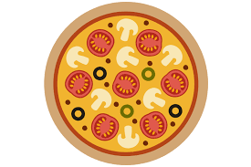

Pizza

Description
Learn all about one of Italians best chefs pizza!
Your family will love it!
Ingredients
- Water - 100g
- Patience
- Flour Tipo 00 - 200g
- 5g yeast
- Olive oil - 2 tbsp
- Fresh basil
- Fresh burata
- Canned Tomatoes
- Oregano
- Garlic
- Table Salt
Steps
-
Combine the water and dough and knead for 10 minutes until you get a
smooth dough.
-
Place the dough in a bowl and let it rest for atleast 90 minutes on room
temperature, cover the bowl with a wet kitchen towl.
-
Roll out the dough, place some flour on the kitchen counter to prevent
it from sticking.
-
In a seperate bowl mix your canned tomatoes, add salt, olive oil, one clove of garlic (crushed) and
oregano to taste.
-
Apply a small amount off this mixture to your pizza, just enough so it's
covered in sauce, don't cover the edges.
-
Add your fresh burata, add small pieces, make sure its shredded first.
-
Place the pizza in pre-heated oven on 250°C for about
10 minutes
- Take the pizza out and add some fresh basil as toppings and enjoy!
Home